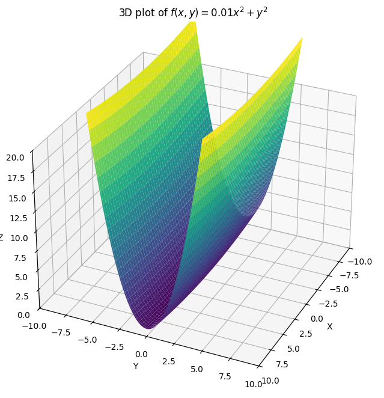
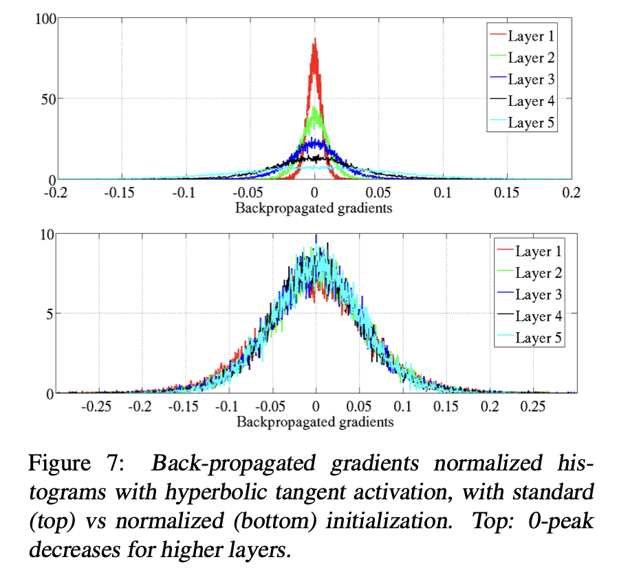

A survey
It’s been a while since I last posted about the state of plasticity in neural networks, so I thought I would give a very opinionated update on how I see the field as of Summer 2025. For a less opinionated take, I found that this survey paper did a nice job of giving an overview of various recent advances.
In the world of neuroscience, people used the term plasticity to refer to the ability of a network to change and then hold its shape. This usage is analogous like how a plastic can be molded and then maintains the shape of its mold (as opposed to e.g. a liquid). Work on neural networks mostly focuses on the former part of this definition, I think in part because the ability to maintain a stable set of connections is trivial in deep learning (you just freeze the weights of your network) compared to biology, which makes the question of maintaining a new “shape” somewhat trivial Additionally, since plasticity is often contrasted with stability, e.g. in stability-plasticity trade-offs, it has become fairly standard usage to refer to plasticity as a network’s ability to change in response to experience, rather than the longevity of the effects of this change.
So loosely speaking, plasticity is mostly used to refer to how easy it is to train the network. For example, if your network has vanishing or exploding gradients, it will not be very trainable. This definition is a bit tricky because trainability will be a function of both the network state and the optimizer being used for training. Poor conditioning, for example, will be a problem for SGD but not Newton’s method. So the same network might be both trainable and untrainable at the same time, depending on which optimizer you use as a reference class.

But just being able to optimize your training objective isn’t the end of the story. A network might be trainable in the sense of being able to reduce its training loss, but it might do so at the cost of inducing a large generalization gap, meaning that the reductions in the training objective might translate little if at all to the data distribution of interest. The term “loss of plasticity” is sometimes used to refer to this situation as well, although the mechanisms that lead to a network not being able to generalize to test data tend to be somewhat different from those that prevent it from reducing its loss on training data.
The modern deep learning researcher, much like the mdoern citizen of a developed city, profits from technological advances which have turned previously sysyphean tasks into near-magical button presses. I remember my (not particularly old) advisor regaling his students about how in the old days before autodiff you used to have to compute your gradients by hand. Just like the magical buttons I press to illuminate my house, start my car, and turn on a toaster, API calls like .grad() and .init() are incantations obfuscating several decades of hard work.
In traditional supervised learning settings, loss of plasticity is almost never a concern. Whether the network had any plasticity to lose in the first place, however, was a much less certain proposition until relatively recently. Most research into the trainability of neural networks therefore focused on finding good (i.e. trainable) architectures and initializations.
This is actually a fairly non-trivial proposition, especially for deep networks, mostly because of how exponents work.

Example from Glorot et al. of how even in a small-by-modern-standards neural network, depth can make gradients/activations rapidly collapse.If each layer of a network scaled the gradients coming into it by a factor of 1.1, then an 80-layer network (not unheard of even in the era of vision networks) would have first-layer gradients that were 2000x larger than the output layer. Similarly, making sure that each layer didn’t deform its inputs too much was also critical for any useful geometric information to propagate through the network.
This line of work is ridiculously under-cited relative to its importance in the field. The papers proposing the popular He and Glorot initializations, for example, each have roughly one tenth of the citations (in the 20s of thousands as of the time of writing) that adam has (over 200k), even though virtually every paper that trains a network using adam almost certainly did so with an initial parameter set that followed some variant of the “scale inversely with the layer dimension to maintain constant feature/gradient norm” principle as was proposed in these papers. As a paper-writer, I’m also guilty of this – the initializer has a default value in most neural network libraries whereas the optimizer does not, so it’s easy to forget that it exists\(^1\).
While the full set of papers studying training dynamics at initialization is too large to fit in the margin of this blog post, I’ll list a few here:
Larochelle et al. giving an overview of what pre-paradigmatic neural network training algorithms looked like. Note in particular that a lot of attention is paid to strategies to avoid training the whole network at once due to instabilities.
A more in-depth example of how people used to get around neural network training not really working by using unsupervised learning to get a decent ‘initialization’.
Nice math on training dynamics and the role of parameter initializations for people who don’t mind their networks not having activation functions.
Glorot et al. demonstrate some aspects of why neural network training was hard in the past.
Pascanu et al. on various things that can go wrong when you have a recurrent network.
The original resnets paper.
An interesting framing of resnets as reducing the rate at which the layers of the network `shatter’ the inputs.
A related perspective that normalization biases residual connections toward the identity.
Interesting perspective on thinking about how signals are passed through a network and its implications for networks that combine skip connections and normalization based on this paper.
People wrote an entire paper on whether it’s better to normalize before or after an attention block in a transformer.
There are two primary properties you need for plasticity loss to be an issue: first, you need your network to need plasticity later in training, for example by having the objective change so that parameters learned on early data won’t work on later data; and second, you need the learning problem to be a little bit unfriendly (for example, if the non-stationarity in your data introduces a lot of gradient spikes or poor conditioning of the local loss landscape), so that optimization has a higher risk of accumulating certain types of pathologies. For example, a friendly nonstationarity might be something like training on the entire internet, and then fine-tuning the network to be better at math problems. An unfriendly non-stationarity could be as ostensibly benign as training an RL agent sequentially on different levels of a game, or it could be more obviously adversarial, such as forcing a network to memorize repeated sequences of random labels.
In most supervised learning problems, neither of these are particularly likely to come up: even if your network is becoming harder to train, as long as it does so at a rate that’s slower than that at which you’re making progresson the learning problem it won’t pose a problem to your (stationary supervised) objective. As a result, plasticity first cropped up as a thing worth studying in the RL and continual learning communities.
For example, I first noticed this was a problem when I was training deep RL agents on Atari games, which involves dealing with all of the gradient-spiking, sequential-levels peculiarities mentioned previously as being particularly likely to induce pathologies, and additionally goes for a very long time (a standard training run is 200M frames, which roughly corresponds to tens of millions of steps depending on your algorithm hypers). At the time, I was trying to show that networks which overfit on sparse-reward tasks by zeroing out all of their ReLUs became less trainable, but I also noticed that in some dense-reward tasks the networks also seemed to get worse at fitting new random targets if I started optimization on a new learning problem from later weight checkpoints. Dohare and Sutton also noticed a similar problem in their agents trained on more explicitly continual learning problems at around the same time, as did Nikishin et al. in high-UTD RL (apparently the pandemic was a great period for plasticity research). Even before work explicitly trying to understand what was going wrong in networks that became less trainable, it was a popular practic ein reinforcmeent learning to periodically freshen up your agent by having it reset its network and distill from the previous parameters for a bit. It was also known in supervised learning that early training data mattered a lot for your network’s ability to learn later on. However, since supervised learning doesn’t require training on a non-stationary distribution, these earlier works didn’t spark as much interest because they admitted the simple and elegant solution of “jUsT TraIN on MoAR DaTA”.
Even when non-pathologic, there is a rich history of observations that neural networks tend to naturally learn different things at different points during training. Papers on things like “catapult” or “slingshot” mechanisms, which focus on the early phase of training when the learning rate is high, have noted that while not directly leading to faster reductions in loss, these early periods of chaotic dynamics are highly influential on the quality of minimum that the network converges to. Some papers have noted the existence of critical periods in network training, where applying certain transformations to the input data early in training can permanently impair performance even if that transformation is removed later, reminiscent of some very unethical \(^2\)experiments on kittens from the 1950s (later work showed you don’t even need nonlinearities to show this effect). There was a paper showing that some similar critical-period-like effect could be induced by over-training on a small dataset that was easy to overfit on in the early stage of training. In this case there was no “distribution shift” so much as a “adding of extra samples from the same distribution”, which made the observed generalization gap even more interesting.
There were signs that something might be off with deep RL agents as well. Some papers had found that kickstarting (i.e. resetting the network and then distilling the newly-initialized parameters on the old outputs) could be an effective way to break through performance plateaus in deep RL. In fact, there were a lot of cases where people found turning their networks off and on again in various ways could help improve performance in RL (e.g. by helping to reduce interference). When training dynamics diverged, the researcher generally shrugged his or her shoulders, mumbled some curse at the deadly triad, and reset the network. And that was roughly where the field’s mechanistic understanding of plasticity stayed for a while, which honestly I get because there are a lot of things that can go wrong in RL and if resets are working, then why fix what isn’t broken?
Between 2019 and 2022, a number of papers came out that all pointed at roughly the same conclusion. Namely:
First, Igl et al. showed that not just resetting once or twice, but constantly throughout training seemed to be helping with performance, plausibly through a mechanism of improving generalization. During my internship at DeepMind in 2021, I went on a wild goose chase of trying to pin down why it seemed like my DQN and Rainbow agents were getting to harder to optimize as I trained them for longer. At around the same time, some folks at the Unviversity of Alberta were working on understanding why their continual deep RL agents were performing worse on successive tasks. In the world of off-policy RL, another group mostly at Google Brain and Berkeley had found that their agents’ representations had a habit of collapsing the longer you trained them (especially on off-policy data), and another group based out of MILA found that this collapse could be made completely irrecoverable by training on a small replay buffer for long enough without adding new data (there was also a blog post on this in the ICLR 2024 blog track which is pretty good, despite its lack of citations to Lyle et al.).
So in three separate regimes (online, ~on-policy RL, continual RL, and off-policy RL), there were papers coming out in 2022 showing that out-of-the-box training algorithms could accumulate irrecoverable pathologies.
I’ve done a lot of work into what causes loss of plasticity, which builds a bit on the understanding I outlined in my previous blog post. I would describe the key new insights as follows:
Parameter norm matters more than you might think, especially as it pertains to qualitative phenomena like feature-learning in the network.
If you can keep your parameter and feature distributions looking roughly like a standard normal, training tends to be robust and not really an issue.
A lot of the issues that arise in network training happen when there’s a gradient spike at a task boundary, which disturbs optimization in a way that makes it easier for the network to make drastic missteps including but not limited to killing off ReLU units.
A lot of the optimization-related problems that come up in deep RL now have more to do with off-policy updates being bad optimization objectives, in the sense that even a trainable network will struggle to see reward-level performance improve by minimizing its optimization objective. This is doubly the case when you account for the interaction between network outputs and data collection that produces exploration.
Full Resets
The easiest way to fix a broken network is to take a new fresh init, and then do some form of distillation on the old broken weights to get it up to speed. Methods that do this include ITER, the resets method from the primacy bias paper, and kickstarting, which have all already been mentioned. There are a few newer approaches too, such as Hare & Tortoise Networks (where instead of resetting to a random init, you reset to a slow-moving EMA of your previous weights). I also like the idea in plasticity injection, where you initialize a new network but instead of using it to replace your old network, you add its output to that of the old one in a clever way and freeze your old weights so that in the end you are optimizing your freshly initialized network parameters only, but don’t see an initial drop in performance because the policy change was continuous with the old network.
Shrink-and-perturb, which while not a full reset does involve perturbing all of the network’s parameters, is another oldie-but-goodie which remains a strong baseline as long as you have some way of quickly distilling the perturbed parameters to recover your original performance. It shows up in BBF, for example, and gives you a nice dial to turn when deciding how much you want to interpolate between NoisyNets-style perturbations which might help with exploration vs the scorched earth policy fully resetting everything in the network. BBF and the original resets approach from the primacy bias paper in fact don’t reset the whole network, but rather just a few of the final layers. I don’t know if there’s a decisive explanation for whether it matters if you reset later vs earlier layers in the network, but it does seem like resetting fully-connected layers is especially helpful as compared to resetting conv filters.
Neuron resets
One intuitively appealing idea is that, much like human brains learn in part by random new connections between neurons, injecting new randomness at the neuron level might facilitate learning in DNNs. Some of these approaches, such as ReDO which resets the incoming weights of dormant ReLU neurons in order to re-activate them, do so without changing the network outputs, meaning that you should in some sense be getting network plasticity “for free” without incurring the drop in performance that is so common in resetting-based approaches.
The main challenge with neuron-resetting strategies is deciding which neurons to reset. I’ve seen a few different ideas proposed on this front. One simple approach, which is backed to some extent by results on network pruning, is to say that neurons with large weights are more important to the network’s outputs than neurons with small ones, so you should leave the high-weight neurons unchanged while resetting the neurons that the network wasn’t using. This is basically the original continual backprop algorithm. A few other options for per-neuron resets include utility-based perturbed gradient descent, or resetting neurons whose gradients are small. This paper gives a nice overview of different factors to take into account when trying to come up with a good utility measure for deciding which neurons to reset.
Optimizer resets
Another class of solutions is to reset your optimization algorithm while leaving the parameters fixed. Asadi et al. had a nice paper showing that just resetting the adam optimizer mean and variance statistics when the target network in a DQN agent is reset can significantly boost performance. Galashov et al. went further and found that adapting your learning rate to the level of nonstationarity detected recently in your task can also improve performance dramatically (although this work required a lot of additional labour to figure out what learning rate to update with). I’ve even found that just closing your eyes and picking a somewhat arbitrary cyclic learning rate schedule can help with some things like warm-starting and offline RL, even if it’s not aligned with any particular task boundary.
Regularization
One limitation of the neuron-resetting approach is that it works great if your network’s problem was that certain neurons weren’t getting gradients because their weights were misaligned. It doesn’t work as well if the problem with your network is that the weights of some neurons are too big and are leeching gradients from the rest of the network. To solve this, a few approaches aim to regularize the whole representation to reduce the odds of this type of representation collapse happening.
The simplest way to do so is to just regularize towards your initialization, with the hope that by staying close to your trainable initial parameters you will still be trainable. You can do this in representation space or in parameter space; in my experience the representation space version is a bit better in reinforcement learning (where parameter regularization tends to produce quite mixed results) and parameter space regularization tends to be better for task-incremental learning.
An alternative approach is to directly regularize the spectrum of the representation to avoid the failure mode where there is one very large eigenvalue that dwarfs everything else. This is mostly a problem in off-policy RL, where the bootstrapping updates have a tendency to amplify already-large components of the features, although to some extent it can also be viewed as a direct consequence of the fact that many RL value functions are inherently ill-conditioned, so the network’s representation in later layers will naturally tend to match that conditioning. Kumar et al. did this to some extent in their paper on offline RL, while Lewandowski et al. found that just regularizing the top singular value (which can be estimated online fairly cheaply) is enough to keep the representation well-conditioned.
Constraints
Instead of regularization, one can also explicitly constrain the network in some way to prevent it from drifting into untrainable regions. One approach by Elsayed et al. is to clip the parameters of the network to not exceed a certain magnitude. I’ve had quite a lot of success with weight normalization, where the per-layer weights are normalized by their frobenius norm, although this requires careful tuning of the learning rate schedule because it turns out that many deep RL algorithms implicitly depend on parameter norm growth to actually converge.
A much more robustly useful solution is to apply layer normalization, which at least keeps the feature statistics consistent across a layer. This requires a bit of care in some cases, since for example if you apply layer normalization naively to inputs in a robotics task you can erase some very important information about your proprioceptive state (for example, in a world where your input consists of position \(x\) and velocity \(\dot{x}\) the state \(x=1, \dot{x} = 1\) will end up being mapped to the same normalized value as \(x=10, \dot{x}=10\), even though these two states most likely do not have the same set of optimal behaviours). I have the somewhat controversial opinion that layer normalization and a well-tuned optimizer are almost always enough to avoid catastrophic network pathologies, and that if your agent still isn’t learning after you apply these tricks there’s probably something else going wrong with the learning process. Unfortunately, either because nobody has come up with a fun name for the “tune adam and add layernorm” strategy or because it’s too effective, it’s often omitted as a baseline. However, when I did a “throw the kitchen sink at the problem and see what sticks” investigation last year, layer norm + weight decay came out looking extremely good.
If you go further and constrain the parameter norm as well as the feature norm (and make sure your learning rate schedule has some amount of decay), you can skip the weight decay penalty tuning phase of the above strategy and often get really good results right off the bat – in fact, when I ran this approach on a bunch of different sequential learning problems I basically didn’t see any signs of loss of plasticity. In fact, if you use the right learning rate schedule this approach is surprisingly effective at mitigating primacy bias and warm-starting effects as well.
Network architecture and scaling
Finally, you can borrow tricks beyond just layernorm from the supervised learning world to do even better in RL tasks. This isn’t a new idea – one of the major changes the IMPALA algorithm made was to swap from a tiny convolutional network to a ResNet-style architecture. People have also tried using different activation functions to improve stability in RL.
However, the majority of useful insights from supervised learning that landed in RL have been ported in a long-running effort to build deep RL algorithms whose performance increases as you make the network bigger. For example, switching to a mixture-of-experts architecture, annealing the \(n\)-step TD update, incorporating periodic resets, adding residual connections, adding weight decay, and various samples from the combinatorial explosion of possible groups of these interventions.
Indeed, the field is coming around to understanding that it is much more effective to look at the synergistic effects of mitigating both network-related instabilities and RL-objective-related instabilities (especially those that arise from off-policy or offline updates), rather than trying to diagnose and treat each separately. Large networks are an interesting case study here because in general they should have better supervised training dynamics, but often don’t see this gain translate to better RL performance because of the other aspects of the RL training objective which have nothing to do with rapidly reducing a loss function via gradient descent. For example, RL agents tend to see policy collapse even if the network is large, not because the network has inadvertently frozen most of its neurons but because of the implicit bias of bootstrapped updates.
Short answer: no. Having a “trainable” network does not remove most of the hurdles in getting your RL agent to do something interesting. There are many factors in the success of RL agents, and many of these are a result of the interaction between optimization and exploration.
Mitigating Plasticity Loss in Continual Reinforcement Learning by Reducing Churn, for example, notes that a collapsed representation will generalize more strongly between states, meaning that changes to the policy in one state will have large effects on many other states, inducing greater policy churn. Some methods, such as Dr M, explicitly try to use the dormant neuron ratio as an indicator of whether the network’s beahviour policy is also collapsing, and use this signal to decide when to inject noise into the parameters and policy to facilitate greater exploration. Glen Berseth had a cool paper at RLC this year suggesting that agents don’t seem to be squeezing all of the juice they can out of their existing data, although it’s not clear to me whether this is an optimization problem or some reflection of the inherent difficulty of off-policy learning.
There’s also still the fact that many RL algorithms are extremely brittle, and trivial design choices can have huge effects on behaviour. Improving the robustness of optimization algorithms seems to have had relatively little effect on this class of failure modes in RL, and it will likely take a deeper rethink of the optimization objectives at the heart of existing methods to see any traction on improving the brittleness of deep RL as a field.
So I would say the past few years of research have shown us that a lot can go wrong with a network when you try to optimize it, but that broken neural network optimization wasn’t the only bottleneck to the stability of RL algorithms in the end. Personally, at this point I think most of the interesting questions lie less in patching up every possible hole in your optimizer that might reduce trainability, and instead in designing optimization objectives that actually translate to better performance on the task you care about.
1. This is an interesting lesson in research community politics: solving a problem too well can be bad for your citation metrics, especially if your method becomes an under-the-hood component of popular libraries that nobody has to think about, and therefore cite, in the future.
2. Yes this is a link to the backprop paper pdf hosted on gwern.net, but if you scroll to the bottom you coincidentally find a detailed description of how researchers occluded vision in kittens.